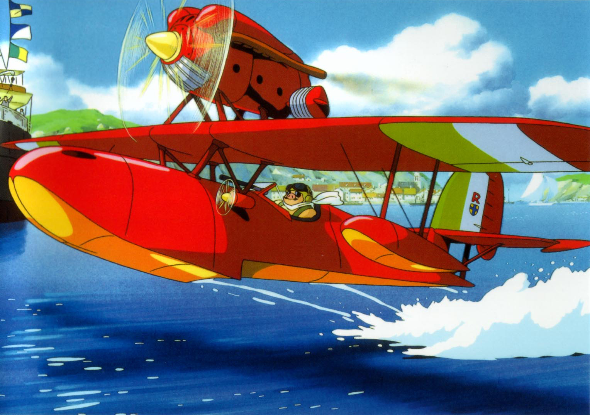
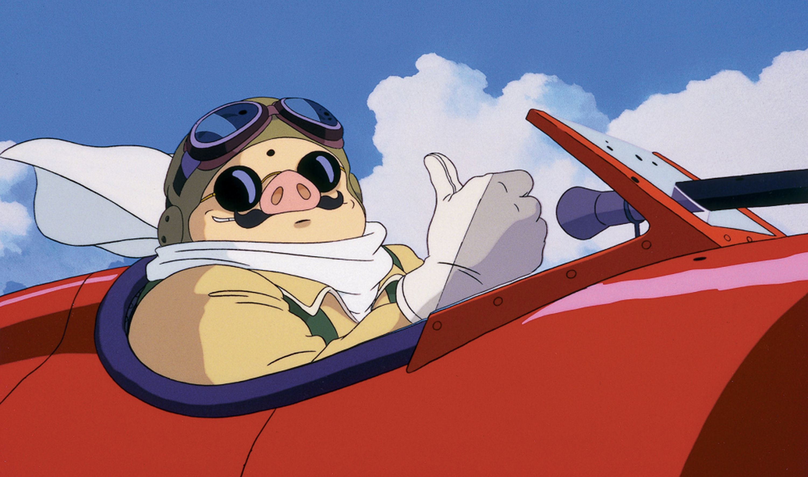
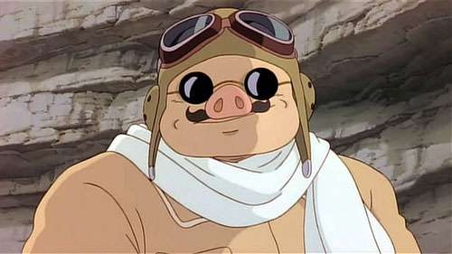
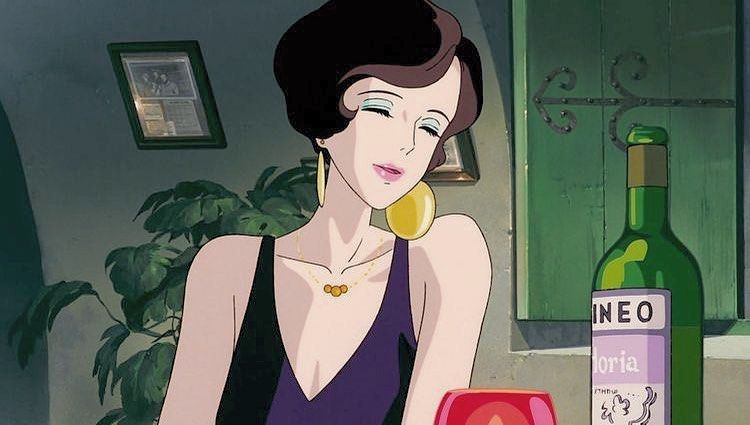
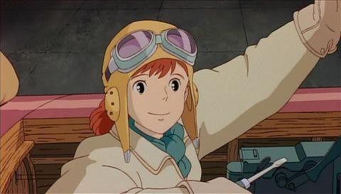
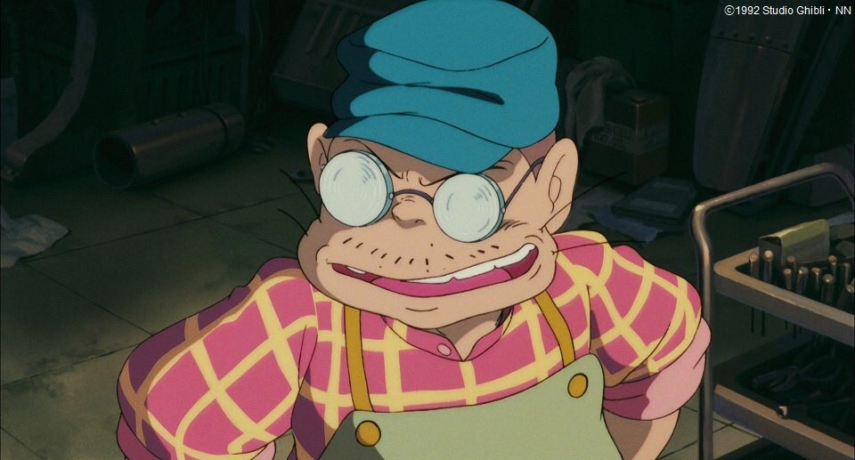
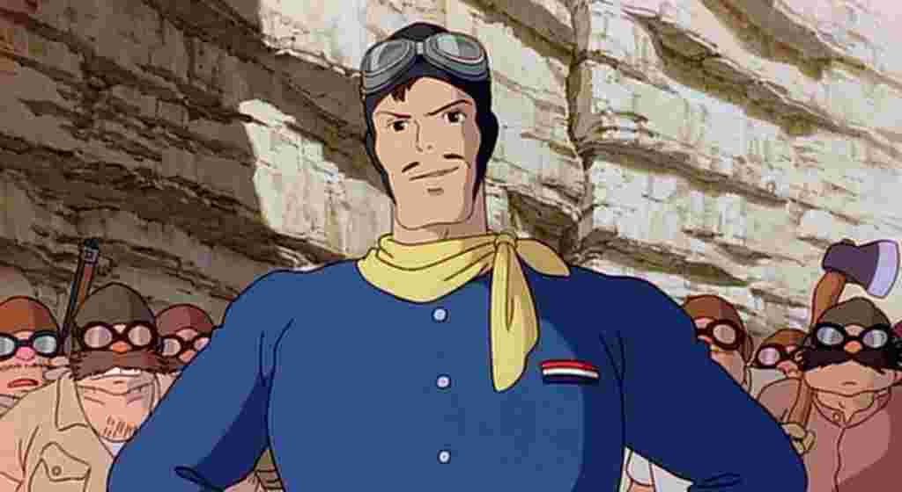
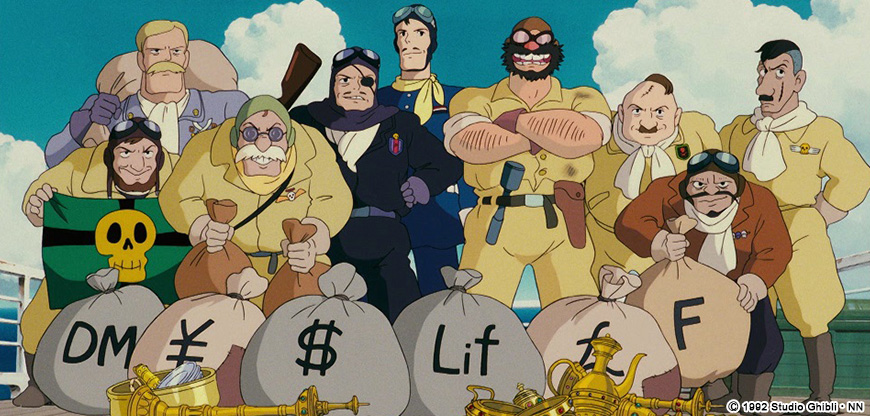
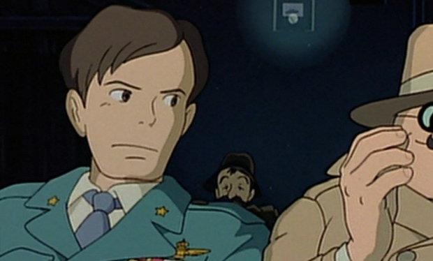
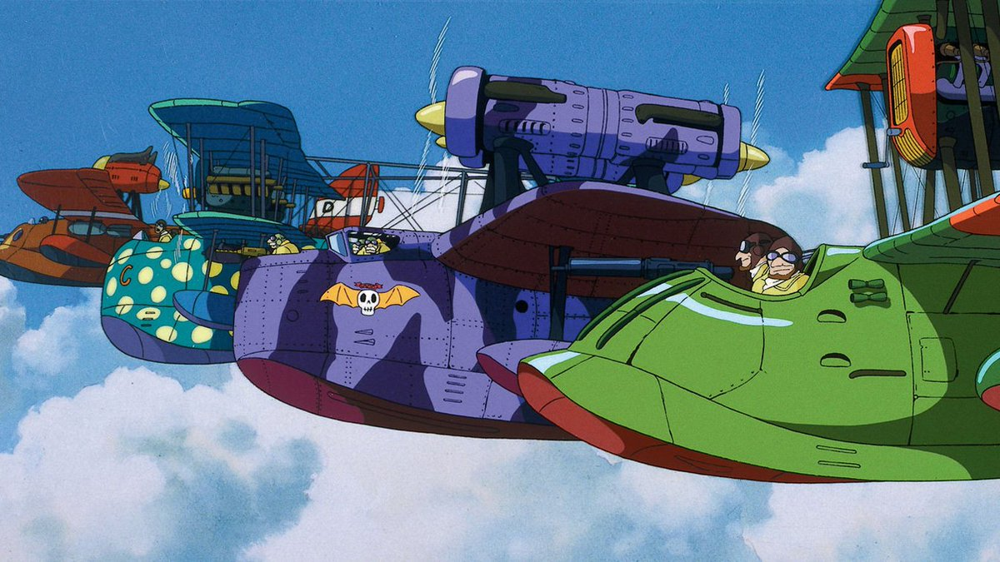

ファシスト政権が統治する大戦間期のイタリア。深紅の飛行艇サボイアを操る豚のポルコ・ロッソは、かつて人間だった頃イタリア空軍のエースだったが、今はアドリア海の小島に隠棲し、空中海賊（空賊）退治を請け負う賞金稼ぎとして暮らしている。ある晩、昔馴染みのジーナが営むホテル・アドリアーノを訪れたポルコは、米国製の飛行艇を操るアメリカ人カーチスに出会う。カーチスは空賊連合が雇った用心棒だった。彼はポルコを撃墜して名を挙げたいと考える。

ポルコ・ロッソ
（マルコ・パゴット）

マダム・ジーナ

フィオ・ピッコロ

ピッコロのオヤジ

ドナルド・カーチス

マンマユート

フェラーリン

空賊連合
『紅の豚』が描いているのは第一次世界大戦と第二次世界大戦をつなぐ時代の物語ということもあり、物語の随所に戦火の臭いがする作品ですが、不思議と戦争映画には見えないのは、登場人物の多くが戦争に対して興味を示していなかったり、個人的な欲求のために行動を起こしていたり、そして笑顔に溢れているシーンが描かれているからと言えるかもしれません。
物語のクライマックスとなる戦いも、戦争ではなくフィオと大金を賭けた決闘となっており、国家同士の戦いに比べたらなんとも個人的と言える戦いです。そんな戦いだからこそ、すごく身近で親しみが感じられますし、どこか反戦の意図が汲まれているようにも感じます。
よく見ると、ポルコの飛行艇にはイタリアの国旗である緑と白と赤のカラーリングが施されています。しかし、これは彼が元々イタリア側の人間であったからではなく、「綺麗だからつけただけ」であったことが監督の宮崎駿の口から語られています。
ホテル・アドリアーノのジーナもポルコ側の人間のようですが、実はユーゴスラビア側の人間。そもそも彼女の船にはアルゼンチンらしきカラーリングの旗が掲げられています。これは、ジーナがアルゼンチン系の人間だからという秘密があります。
登場人物は戦争に背くような生き方をしているものの、出身国が名残のように示されている所に、国家という縛りからは完全には逃れられない宿命が感じられます。
最後にこの映画を観た人の多くが気になるであろう「ポルコが豚の姿になった理由」について言及しておこうと思います。
上映当時から「なぜ豚になってしまったのか」「最後には人間に戻れたのか」といった問いかけは、宮崎駿に対して何度も向けられていたのですが、はっきりとそこに理屈のある回答はなく、どちらかというそういった問いかけこそ野暮であるかのような態度で、煙に巻くような回答をしていました。そこには、宮崎駿自身がポルコが豚になった理由を単純化したくない気持ちが隠れているようにも思います。
ただ、ポルコが豚になったことに対して、一切言及がなかったわけではありません。公開当時の『紅の豚』のパンフレットに書かれている宮崎駿のインタビューでは、ポルコが豚であることに対していくつか言及がされています。すでにパンフレットの前書きの時点で、誰がどういった理由でポルコを豚にしたのかが明文化されているのです。迫り来る新たな戦争を前に再び国家の英雄になることを拒み、自分で自分に魔法をかけてブタになってしまいます。
そう、ポルコは自分に対して魔法をかけて豚になってしまっているのです。そう言われてみれば、人間の面倒くさい事柄に対して、自分は豚だから関係ないと他人事めいたりと、決してポルコ自身は豚であることを嫌がってもいなければ、治す気もないような態度に表れています。その浮世離れした態度こそ、ポルコが自分自身にかけた豚になるという呪いなのでしょう。
その態度はポルコの魅力の一つにも見えますし、どこかジーナに対する逃げのようにも見えます。しかし、ポルコが自ら豚になることを選んでいる以上、その理由を解こうとすること自体が野暮な行動なのかもしれません。その問いを投げかけないことこそ、『紅の豚』における“カッコイイ“なのかもしれませんね。